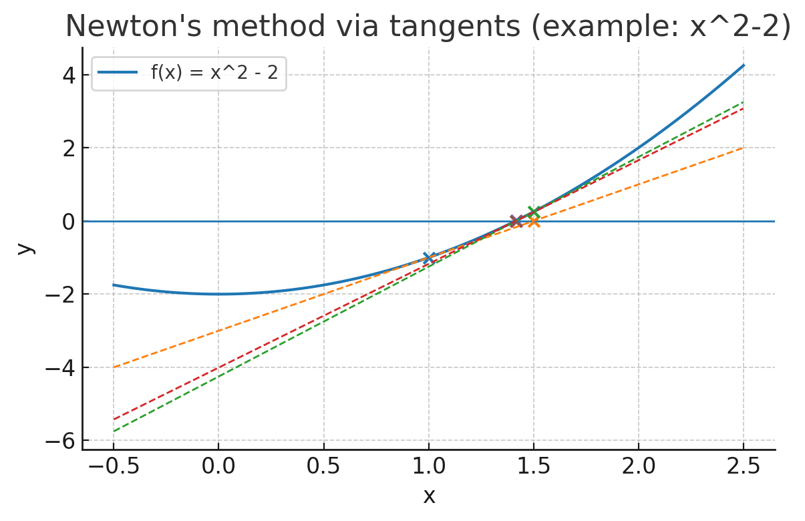
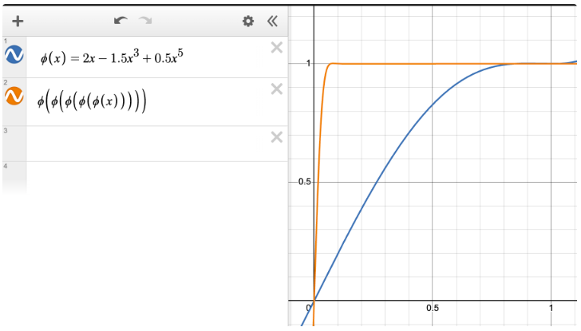

Muon Optimizer
这篇博文是讲Muon优化器，Adaptive Moment Estimation
你可能收获：一种新的optimzer的原理
你很难收获：实践中的应用结果
Muon Optimizer
Motivation：把原始梯度矩阵换成一个正交阵 方法：应用Newton-Schulz matrix iteration 优势： - 不用做SVD分解，很方便 - 当前的updates matrics呈现出low-rank matrices，此方法可以增加多样性（和我之前研究相符、值得进一步研究）
Newton Method：切线找根

Newton-Schulz Method：牛顿法的矩阵类似
Motivation：把原本的矩阵逐渐迭代成正交阵 一次迭代： \[ \begin{aligned} G' &:= aG + b(GG^\top)G + c(GG^\top)^2 G \\ &= (aI + b(GG^\top) + c(GG^\top)^2)G \\ &= (aI + bUS^2U^\top + cUS^4U^\top)USV^\top \\ &= U(aS + bS^3 + cS^5)V^\top \end{aligned} \]
其中第二行到第三行应用了SVD分解 原理：中间的奇异值S逐渐趋近于1 
Muon Optimizer
# Pytorch code
def newtonschulz5(G, steps=5, eps=1e-7):
assert G.ndim == 2
a, b, c = (3.4445, -4.7750, 2.0315) ------------------------> 满足条件二
X = G.bfloat16()
X /= (X.norm() + eps) -------------------------------------> 满足条件一
if G.size(0) > G.size(1):
X = X.T
for _ in range(steps):
A = X @ X.T
B = b * A + c * A @ A
X = a * X + B @ X
if G.size(0) > G.size(1):
X = X.T
return X应用上述Newton-Schulz的充分条件：
初始G的奇异值范围在[0,1]之间，所以每次会除以F范数
当N趋于1时，(phi(x))^N趋于1，所以需要选择合适的a、b、c
完整算法
第四行：加momentum
第五行：正交化
Require: Learning rate \(\eta\), momentum \(\mu\)
- Initialize \(B_0 \gets 0\)
- For \(t = 1, \dots\) do
- Compute \(G_t \gets \nabla_\theta \mathcal{L}_t(\theta_{t-1})\)
- \(B_t \gets \mu B_{t-1} + G_t\)
- \(O_t \gets \text{NewtonSchulz5}(B_t)\)
- Update \(\theta_t \gets \theta_{t-1} - \eta O_t\)
- Compute \(G_t \gets \nabla_\theta \mathcal{L}_t(\theta_{t-1})\)
- return \(\theta_t\)
MuonClip Optimizer
Motivation：直接修改更新后的\(W_q\)$W_k$参数矩阵。这一步与之前的操作无关。
qk-clip 技术：放缩Q、K矩阵，将两个矩阵的范数控制在一定范围内。：
\[ q_i = \eta^\alpha W_q x_i, \quad k_i = \eta^{1-\alpha} W_k x_i \]
其中 \(\alpha\) 为平衡Q与K的超参：
\[ (\eta^\alpha q_i)^\top (\eta^{1-\alpha} k_j) = \eta q_i^\top k_j \]
自适应因子 \(\eta\)（阈值 \(t\)）在每步根据最大值：
\[ \eta = \min\left(\frac{t}{\max_{i,j}(q_i^\top k_j)},1\right) \]
其中 \(t\) 是超参。
关于正交化的讨论
muon观察到：用SGD-momentum and Adam更新时得到的梯度矩阵大都是high condition number，也就是最大奇异值和最小奇异值的比值很大。换句话说，可以近似地将梯度矩阵看成一个低秩矩阵，low-rank matrices。
我的上次实验： 
来源
- muon: https://kellerjordan.github.io/posts/muon/
- muonclip: https://moonshotai.github.io/Kimi-K2/